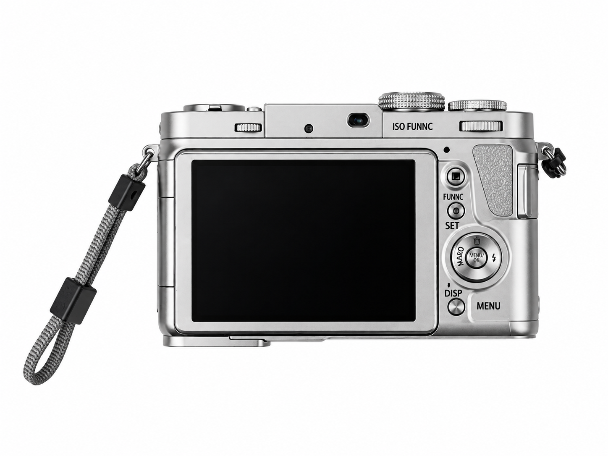
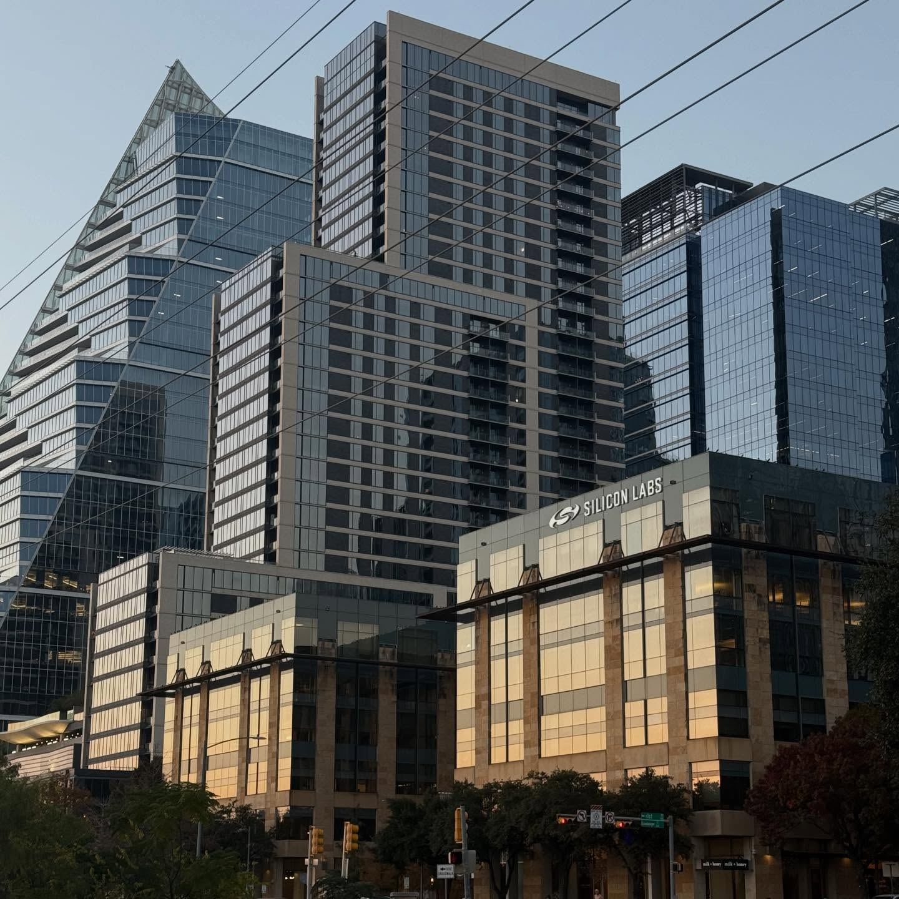

Through my lens.
Photography and visual content from the Teicheir perspective.


Photo 1 of 73
From the Teicheir photo archive · 1
More photography on Instagram ↗Photography and visual content from the Teicheir perspective.


From the Teicheir photo archive · 1
More photography on Instagram ↗